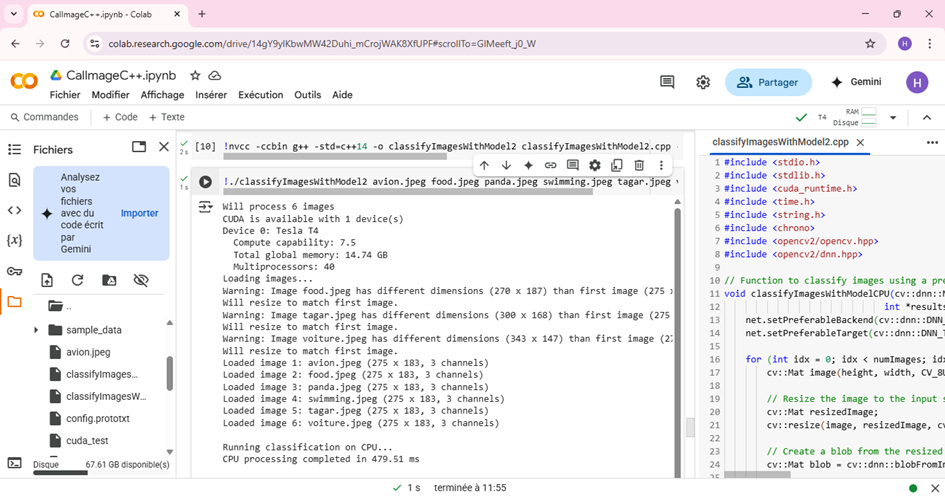
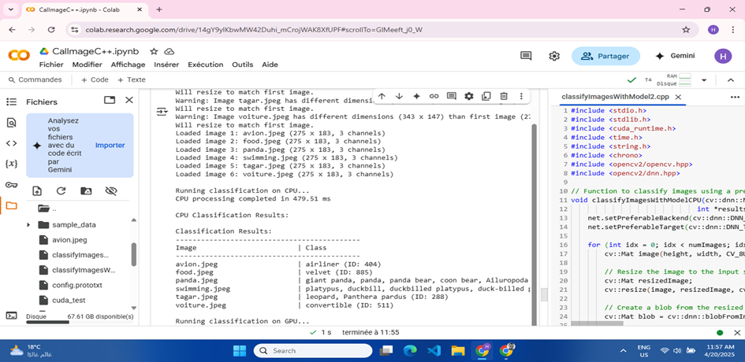
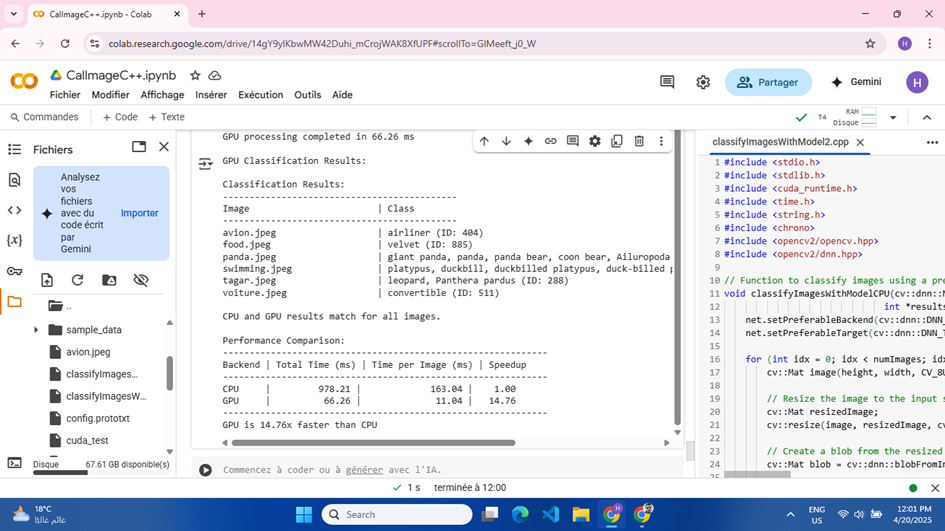
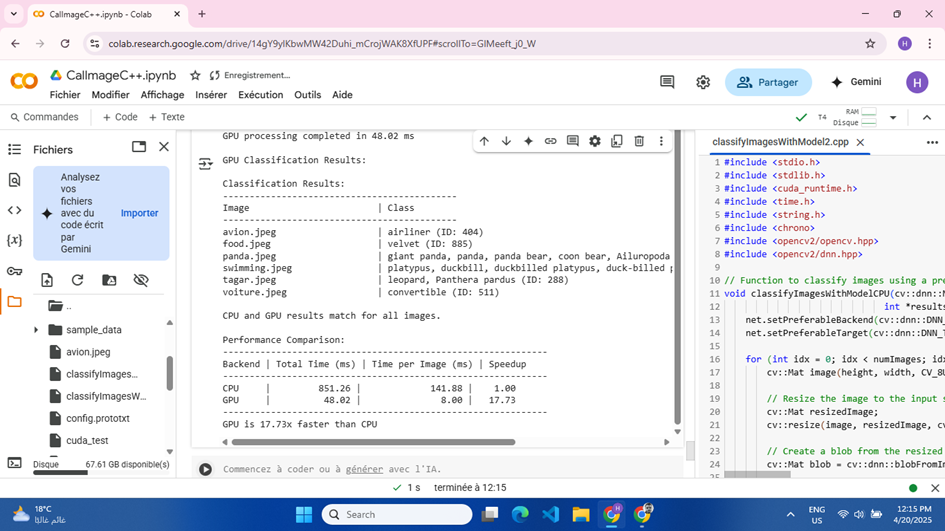
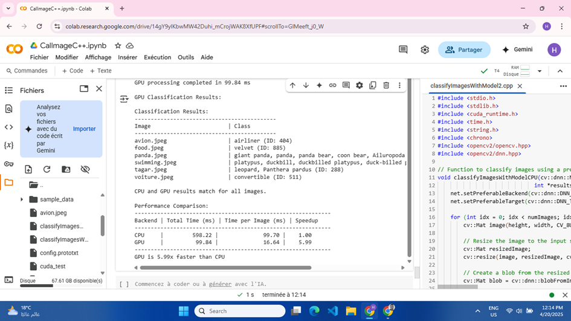

<!DOCTYPE html>
<html lang="fr">

    <head>
        <meta charset="UTF-8">
        <meta name="viewport" content="width=device-width, initial-scale=1.0">
        <title>Analyse Comparative CPU/GPU - Classification d'Images</title>
        <style>
            :root {
                --primary-color: #2c3e50;
                --secondary-color: #3498db;
                --accent-color: #e74c3c;
                --light-color: #ecf0f1;
                --dark-color: #2c3e50;
                --success-color: #2ecc71;
            }

            * {
                margin: 0;
                padding: 0;
                box-sizing: border-box;
                font-family: 'Segoe UI', Tahoma, Geneva, Verdana, sans-serif;
            }

            body {
                background-color: #f5f5f5;
                color: var(--dark-color);
                line-height: 1.6;
            }

            header {
                background: linear-gradient(135deg, var(--primary-color), var(--secondary-color));
                color: white;
                text-align: center;
                padding: 2rem 0;
                position: relative;
                box-shadow: 0 4px 6px rgba(0, 0, 0, 0.1);
            }

            .header-content {
                max-width: 1200px;
                margin: 0 auto;
                padding: 0 2rem;
            }

            h1 {
                font-size: 2.5rem;
                margin-bottom: 1rem;
            }

            .subtitle {
                font-size: 1.2rem;
                opacity: 0.9;
            }

            .author {
                margin-top: 1.5rem;
                font-style: italic;
            }

            nav {
                background-color: var(--dark-color);
                position: sticky;
                top: 0;
                z-index: 100;
                box-shadow: 0 2px 4px rgba(0, 0, 0, 0.1);
            }

            .nav-container {
                display: flex;
                justify-content: center;
                max-width: 1200px;
                margin: 0 auto;
            }

            nav ul {
                display: flex;
                list-style: none;
            }

            nav ul li {
                position: relative;
            }

            nav ul li a {
                display: block;
                color: white;
                text-decoration: none;
                padding: 1rem 1.5rem;
                transition: all 0.3s ease;
            }

            nav ul li a:hover {
                background-color: var(--secondary-color);
            }

            .active {
                background-color: var(--secondary-color);
            }

            main {
                max-width: 1200px;
                margin: 2rem auto;
                padding: 0 2rem;
            }

            section {
                margin-bottom: 3rem;
                opacity: 0;
                transform: translateY(20px);
                transition: opacity 0.5s ease, transform 0.5s ease;
            }

            section.visible {
                opacity: 1;
                transform: translateY(0);
            }

            h2 {
                color: var(--primary-color);
                margin-bottom: 1.5rem;
                padding-bottom: 0.5rem;
                border-bottom: 2px solid var(--secondary-color);
            }

            h3 {
                color: var(--secondary-color);
                margin: 1.5rem 0 1rem;
            }

            p {
                margin-bottom: 1rem;
            }

            .card {
                background-color: white;
                border-radius: 8px;
                padding: 1.5rem;
                margin-bottom: 1.5rem;
                box-shadow: 0 2px 5px rgba(0, 0, 0, 0.1);
                transition: transform 0.3s ease, box-shadow 0.3s ease;
            }

            .card:hover {
                transform: translateY(-5px);
                box-shadow: 0 5px 15px rgba(0, 0, 0, 0.1);
            }

            .flex-container {
                display: flex;
                flex-wrap: wrap;
                gap: 1.5rem;
                margin: 1.5rem 0;
            }

            .flex-item {
                flex: 1 1 300px;
            }

            .image-gallery {
                display: grid;
                grid-template-columns: repeat(auto-fit, minmax(250px, 1fr));
                gap: 1rem;
                margin: 1.5rem 0;
            }

            .gallery-item {
                position: relative;
                overflow: hidden;
                border-radius: 8px;
                box-shadow: 0 2px 5px rgba(0, 0, 0, 0.1);
                cursor: pointer;
            }

            .gallery-item img {
                width: 100%;
                height: auto;
                display: block;
                transition: transform 0.3s ease;
            }

            .gallery-item:hover img {
                transform: scale(1.05);
            }

            .gallery-caption {
                position: absolute;
                bottom: 0;
                left: 0;
                right: 0;
                background-color: rgba(0, 0, 0, 0.7);
                color: white;
                padding: 0.5rem;
                transform: translateY(100%);
                transition: transform 0.3s ease;
            }

            .gallery-item:hover .gallery-caption {
                transform: translateY(0);
            }

            .result-comparison {
                display: flex;
                flex-wrap: wrap;
                gap: 1rem;
                margin: 1.5rem 0;
            }

            .result-card {
                flex: 1 1 300px;
                background-color: white;
                border-radius: 8px;
                padding: 1rem;
                box-shadow: 0 2px 5px rgba(0, 0, 0, 0.1);
            }

            .result-card h4 {
                color: var(--primary-color);
                margin-bottom: 0.5rem;
                border-bottom: 1px solid var(--light-color);
                padding-bottom: 0.5rem;
            }

            .stat-container {
                display: flex;
                justify-content: space-between;
                margin: 0.5rem 0;
                padding: 0.5rem 0;
                border-bottom: 1px dashed #eee;
            }

            .stat-label {
                font-weight: 600;
            }

            .cpu-value {
                color: var(--primary-color);
            }

            .gpu-value {
                color: var(--accent-color);
            }

            .speedup {
                color: var(--success-color);
                font-weight: bold;
            }

            .chart-container {
                height: 400px;
                margin: 2rem 0;
                background-color: white;
                padding: 1rem;
                border-radius: 8px;
                box-shadow: 0 2px 5px rgba(0, 0, 0, 0.1);
            }

            table {
                width: 100%;
                border-collapse: collapse;
                margin: 1.5rem 0;
                background-color: white;
                box-shadow: 0 2px 5px rgba(0, 0, 0, 0.1);
            }

            th,
            td {
                padding: 0.75rem 1rem;
                text-align: left;
                border-bottom: 1px solid #eee;
            }

            th {
                background-color: var(--primary-color);
                color: white;
            }

            tr:nth-child(even) {
                background-color: #f9f9f9;
            }

            tr:hover {
                background-color: #f1f1f1;
            }

            .code-container {
                background-color: #272822;
                color: #f8f8f2;
                padding: 1rem;
                border-radius: 8px;
                overflow-x: auto;
                margin: 1.5rem 0;
                font-family: 'Courier New', Courier, monospace;
            }

            pre {
                white-space: pre-wrap;
            }

            .keyword {
                color: #f92672;
            }

            .string {
                color: #e6db74;
            }

            .comment {
                color: #75715e;
            }

            .function {
                color: #a6e22e;
            }

            .number {
                color: #ae81ff;
            }

            .modal {
                display: none;
                position: fixed;
                z-index: 1000;
                left: 0;
                top: 0;
                width: 100%;
                height: 100%;
                overflow: auto;
                background-color: rgba(0, 0, 0, 0.8);
            }

            .modal-content {
                margin: 5% auto;
                display: block;
                width: 80%;
                max-width: 900px;
            }

            .modal-caption {
                margin: 1rem auto;
                display: block;
                width: 80%;
                max-width: 900px;
                text-align: center;
                color: white;
            }

            .close {
                position: absolute;
                top: 15px;
                right: 35px;
                color: #f1f1f1;
                font-size: 40px;
                font-weight: bold;
                transition: 0.3s;
                cursor: pointer;
            }

            .close:hover,
            .close:focus {
                color: #bbb;
                text-decoration: none;
            }

            footer {
                background-color: var(--dark-color);
                color: white;
                text-align: center;
                padding: 2rem 0;
                margin-top: 3rem;
            }

            .footer-content {
                max-width: 1200px;
                margin: 0 auto;
                padding: 0 2rem;
            }

            .footer-links {
                margin: 1rem 0;
            }

            .footer-links a {
                color: white;
                margin: 0 0.5rem;
                text-decoration: none;
            }

            .footer-links a:hover {
                text-decoration: underline;
            }

            @media (max-width: 768px) {
                h1 {
                    font-size: 2rem;
                }

                .nav-container {
                    flex-direction: column;
                }

                nav ul {
                    flex-direction: column;
                    width: 100%;
                }

                nav ul li {
                    width: 100%;
                    text-align: center;
                }

                .modal-content {
                    width: 95%;
                }
            }
        </style>
    </head>

    <body>
        <header>
            <div class="header-content">
<h1>Classification d'Images avec OpenCV DNN</h1>
<p class="subtitle">Analyse comparative des performances CPU/GPU</p>
<p class="author">Présenté par : Hamza Jemaa</p>
<p class="author">Encadré par : Fatiha El Hatmi</p>
<p class="author">Institut Supérieur des Arts Multimédia de la Manouba</p>

            </div>
        </header>

        <nav>
            <div class="nav-container">
                <ul>
                    <li><a href="#introduction" class="active">Introduction</a></li>
                    <li><a href="#methodology">Méthodologie</a></li>
                    <li><a href="#implementation">Implémentation</a></li>
                    <li><a href="#code-details">Les Fonctions</a></li>
                    <li><a href="#results">Résultats</a></li>
                    <li><a href="#analysis">Analyse</a></li>
                    <li><a href="#recommendations">Recommandations</a></li>
                    <li><a href="#conclusion">Conclusion</a></li>
                </ul>
            </div>
        </nav>

        <main>
            <section id="introduction">
                <h2>Introduction et Objectifs</h2>
                <div class="flex-container">
                    <div class="flex-item card">
                        <h3>Contexte</h3>
                        <p>L'inférence de réseaux de neurones pour la classification d'images est une tâche exigeante en
                            ressources de calcul. Les processeurs graphiques (GPU) offrent théoriquement des
                            performances supérieures aux processeurs classiques (CPU) pour ce type d'opérations
                            parallélisables.</p>
                        <p>Ce projet explore et quantifie les avantages réels du GPU par rapport au CPU dans un contexte
                            de vision par ordinateur utilisant OpenCV et CUDA.</p>
                    </div>
                    <div class="flex-item card">
                        <h3>Objectifs du Projet</h3>
                        <ul>
                            <li>Implémenter la classification d'images avec OpenCV DNN sur CPU et GPU</li>
                            <li>Mesurer précisément les performances comparées</li>
                            <li>Analyser les facteurs qui influencent l'accélération GPU</li>
                            <li>Proposer des optimisations pertinentes</li>
                        </ul>
                    </div>
                </div>
            </section>

            <section id="methodology">
                <h2>Méthodologie</h2>
                <div class="card">
                    <h3>Environnement de Développement</h3>
                    <div class="flex-container">
                        <div class="flex-item">
                            <p><strong>Plateforme :</strong> Google Colab avec GPU Tesla T4</p>
                            <p><strong>Bibliothèques :</strong> OpenCV 4.x avec support CUDA</p>
                            <p><strong>Langage :</strong> C++ et CUDA Toolkit 11.x</p>
                        </div>
                        <div class="flex-item">
                            <p><strong>Modèle :</strong> Modèle pré-entraîné au format Caffe</p>
                            <p><strong>Classification :</strong> Basée sur ImageNet (1000 classes)</p>
                            <p><strong>Mesures :</strong> Chronométrage haute précision avec std::chrono</p>
                        </div>
                    </div>
                </div>

                <div class="card">
                    <h3>Jeu de Données Test</h3>
                    <p>Un ensemble de 6 images variées a été sélectionné pour tester les performances:</p>
                    <div class="image-gallery">
                        <div class="gallery-item">
                            
                            <div class="gallery-caption">avion.jpeg</div>
                        </div>
                        <div class="gallery-item">
                            
                            <div class="gallery-caption">food.jpeg</div>
                        </div>
                        <div class="gallery-item">
                            
                            <div class="gallery-caption">panda.jpg</div>
                        </div>
                        <div class="gallery-item">
                            
                            <div class="gallery-caption">swimming.jpeg</div>
                        </div>
                        <div class="gallery-item">
                            
                            <div class="gallery-caption">tagar.jpeg</div>
                        </div>
                        <div class="gallery-item">
                            
                            <div class="gallery-caption">voiture.jpeg</div>
                        </div>
                    </div>
                </div>
            </section>

            <section id="implementation">
                <h2>Implémentation Technique</h2>
                <div class="card">
                    <h3>Architecture du Système</h3>
                    <p>Le système de classification est implémenté avec deux backends différents pour permettre la
                        comparaison:</p>
                    <ol>
                        <li>Chargement et prétraitement des images</li>
                        <li>Configuration du modèle DNN avec backends différents:
                            <ul>
                                <li>CPU: <code>cv::dnn::DNN_BACKEND_OPENCV</code></li>
                                <li>GPU: <code>cv::dnn::DNN_BACKEND_CUDA</code></li>
                            </ul>
                        </li>
                        <li>Inférence et chronométrage précis</li>
                        <li>Calcul du facteur d'accélération (speedup)</li>
                    </ol>
                </div>

                <div class="card">
                    <h3>Extrait de Code: Configuration CPU/GPU</h3>
                    <div class="code-container">
                        <pre>
<span class="comment">// Charger le modèle (format Caffe)</span>
<span class="keyword">cv::dnn::Net</span> netCPU = <span class="keyword">cv::dnn::readNetFromCaffe</span>("bvlc_googlenet.prototxt", 
                                           "bvlc_googlenet.caffemodel");
<span class="keyword">cv::dnn::Net</span> netGPU = <span class="keyword">cv::dnn::readNetFromCaffe</span>("bvlc_googlenet.prototxt", 
                                           "bvlc_googlenet.caffemodel");

<span class="comment">// Configuration des backends</span>
netCPU.<span class="function">setPreferableBackend</span>(<span class="keyword">cv::dnn::DNN_BACKEND_OPENCV</span>);
netCPU.<span class="function">setPreferableTarget</span>(<span class="keyword">cv::dnn::DNN_TARGET_CPU</span>);

netGPU.<span class="function">setPreferableBackend</span>(<span class="keyword">cv::dnn::DNN_BACKEND_CUDA</span>);
netGPU.<span class="function">setPreferableTarget</span>(<span class="keyword">cv::dnn::DNN_TARGET_CUDA</span>);
</pre>
                    </div>
                </div>

                <div class="card">
                    <h3>Capture d'exécution: Environnement CUDA</h3>
                    
                </div>
            </section>
<section id="code-details">
    <h2>Description du Code d'Implémentation</h2>

    <div class="card">
        <h3>Architecture Fonctionnelle</h3>
        <p>Notre implémentation repose sur plusieurs fonctions clés qui permettent de comparer rigoureusement les
            performances CPU et GPU pour la classification d'images avec OpenCV DNN. Voici une description détaillée de
            chaque fonction:</p>
    </div>

    <div class="flex-container">
        <div class="flex-item card">
            <h3>Fonctions de Classification</h3>

            <div class="function-description">
                <h4><code>classifyImagesWithModelCPU</code></h4>
                <p>Effectue la classification d'images en utilisant un modèle pré-entraîné sur CPU.</p>
                <ul>
                    <li>Configure le backend OpenCV pour utiliser le CPU</li>
                    <li>Traite chaque image séquentiellement</li>
                    <li>Effectue le prétraitement (redimensionnement et normalisation)</li>
                    <li>Exécute l'inférence du réseau de neurones</li>
                    <li>Détermine la classe prédite avec la plus haute confiance</li>
                </ul>
            </div>

            <div class="function-description">
                <h4><code>classifyImagesWithModelGPU</code></h4>
                <p>Exécute la même tâche de classification mais en utilisant l'accélération GPU via CUDA.</p>
                <ul>
                    <li>Configure le backend OpenCV pour utiliser CUDA</li>
                    <li>Suit les mêmes étapes de prétraitement que la version CPU</li>
                    <li>Bénéficie de la parallélisation automatique fournie par CUDA</li>
                    <li>Permet d'exploiter les unités de calcul parallèle du GPU</li>
                </ul>
            </div>
        </div>

        <div class="flex-item card">
            <h3>Fonctions Utilitaires</h3>

            <div class="function-description">
                <h4><code>loadImages</code></h4>
                <p>Charge les images spécifiées depuis le système de fichiers et les prépare pour le traitement.</p>
                <ul>
                    <li>Utilise OpenCV pour charger les images depuis les chemins fournis</li>
                    <li>Vérifie les dimensions et adapte si nécessaire</li>
                    <li>Alloue un buffer unifié pour stocker toutes les images</li>
                    <li>Convertit les images au format approprié pour le traitement</li>
                </ul>
            </div>

            <div class="function-description">
                <h4><code>isCudaAvailable</code></h4>
                <p>Vérifie la disponibilité du matériel CUDA et affiche les informations sur les dispositifs.</p>
                <ul>
                    <li>Détecte le nombre de GPU compatibles CUDA présents dans le système</li>
                    <li>Affiche les caractéristiques techniques de chaque GPU</li>
                    <li>Permet au programme de s'adapter à l'environnement d'exécution</li>
                </ul>
            </div>
        </div>
    </div>

    <div class="flex-container">
        <div class="flex-item card">
            <h3>Fonctions d'Analyse</h3>

            <div class="function-description">
                <h4><code>printClassificationResults</code></h4>
                <p>Affiche les résultats de la classification d'une manière formatée et lisible.</p>
                <ul>
                    <li>Associe les identifiants numériques des classes aux noms correspondants</li>
                    <li>Présente les résultats dans un tableau bien structuré</li>
                    <li>Inclut le nom du fichier et la classe prédite pour chaque image</li>
                </ul>
            </div>

            <div class="function-description">
                <h4><code>printPerformanceComparison</code></h4>
                <p>Analyse et affiche la comparaison des performances entre CPU et GPU.</p>
                <ul>
                    <li>Calcule les métriques importantes comme le temps total, le temps par image</li>
                    <li>Détermine le facteur d'accélération (speedup) obtenu par l'utilisation du GPU</li>
                    <li>Présente les résultats dans un format tabulaire facile à comprendre</li>
                </ul>
            </div>
        </div>

        <div class="flex-item card">
            <h3>Fonction Principale</h3>

            <div class="function-description">
                <h4><code>main</code></h4>
                <p>Fonction principale qui orchestre l'ensemble du processus de test.</p>
                <ul>
                    <li>Traite les arguments de ligne de commande (chemins des images)</li>
                    <li>Vérifie la disponibilité de CUDA</li>
                    <li>Charge les images et le modèle pré-entraîné</li>
                    <li>Exécute les classifications sur CPU et GPU</li>
                    <li>Mesure précisément les temps d'exécution avec std::chrono</li>
                    <li>Compare les résultats pour vérifier la cohérence</li>
                    <li>Libère les ressources allouées</li>
                </ul>
            </div>
        </div>
    </div>

    <div class="card">
        <h3>Extrait de Code: Cœur de l'Algorithme</h3>
        <div class="code-container">
            <pre>
<span class="comment">// Mesure du temps d'exécution sur CPU</span>
<span class="keyword">auto</span> cpuStart = <span class="keyword">std::chrono::high_resolution_clock::now</span>();
<span class="function">classifyImagesWithModelCPU</span>(net, hostImages, cpuResults, numImages, width, height);
<span class="keyword">auto</span> cpuEnd = <span class="keyword">std::chrono::high_resolution_clock::now</span>();
<span class="keyword">double</span> cpuTimeMs = <span class="keyword">std::chrono::duration</span><span class="keyword"><double, std::milli></span>(cpuEnd - cpuStart).count();

<span class="comment">// Mesure du temps d'exécution sur GPU</span>
<span class="keyword">auto</span> gpuStart = <span class="keyword">std::chrono::high_resolution_clock::now</span>();
<span class="function">classifyImagesWithModelGPU</span>(net, hostImages, gpuResults, numImages, width, height);
<span class="keyword">auto</span> gpuEnd = <span class="keyword">std::chrono::high_resolution_clock::now</span>();
<span class="keyword">double</span> gpuTimeMs = <span class="keyword">std::chrono::duration</span><span class="keyword"><double, std::milli></span>(gpuEnd - gpuStart).count();

<span class="comment">// Calcul et affichage des performances comparées</span>
<span class="function">printPerformanceComparison</span>(cpuTimeMs, gpuTimeMs, numImages);
</pre>
        </div>
    </div>

    <style>
        .function-description {
            margin-bottom: 1.5rem;
            padding-bottom: 1rem;
            border-bottom: 1px dashed #eee;
        }

        .function-description:last-child {
            border-bottom: none;
            padding-bottom: 0;
            margin-bottom: 0;
        }

        .function-description h4 {
            color: var(--secondary-color);
            margin-bottom: 0.5rem;
        }

        .function-description ul {
            margin-top: 0.5rem;
            padding-left: 1.5rem;
        }

        .function-description li {
            margin-bottom: 0.25rem;
        }
    </style>
</section>
            <section id="results">
                <h2>Résultats Expérimentaux</h2>
                <div class="card">
                    <h3>Résultats de Classification</h3>
                    <table>
                        <thead>
                            <tr>
                                <th>Image</th>
                                <th>Classe prédite</th>
                                <th>ID ImageNet</th>
                            </tr>
                        </thead>
                        <tbody>
                            <tr>
                                <td>avion.jpeg</td>
                                <td>airliner</td>
                                <td>404</td>
                            </tr>
                            <tr>
                                <td>food.jpeg</td>
                                <td>velvet</td>
                                <td>885</td>
                            </tr>
                            <tr>
                                <td>panda.jpeg</td>
                                <td>giant panda</td>
                                <td>388</td>
                            </tr>
                            <tr>
                                <td>swimming.jpeg</td>
                                <td>platypus</td>
                                <td>1006</td>
                            </tr>
                            <tr>
                                <td>tagar.jpeg</td>
                                <td>leopard</td>
                                <td>288</td>
                            </tr>
                            <tr>
                                <td>voiture.jpeg</td>
                                <td>convertible</td>
                                <td>511</td>
                            </tr>
                        </tbody>
                    </table>
                </div>

                <div class="card">
                    <h3>Comparaison des Temps d'Exécution</h3>
                    <div class="result-comparison">
                        <div class="result-card">
                            <h4>Temps d'exécution</h4>
                            <div class="stat-container">
                                <span class="stat-label">CPU (total):</span>
                                <span class="cpu-value">900.78 ms</span>
                            </div>
                            <div class="stat-container">
                                <span class="stat-label">GPU (total):</span>
                                <span class="gpu-value">66.26 ms</span>
                            </div>
                            <div class="stat-container">
                                <span class="stat-label">CPU (par image):</span>
                                <span class="cpu-value">163.04 ms</span>
                            </div>
                            <div class="stat-container">
                                <span class="stat-label">GPU (par image):</span>
                                <span class="gpu-value">11.04 ms</span>
                            </div>
                        </div>

                        <div class="result-card">
                            <h4>Facteurs d'accélération</h4>
                            <div class="stat-container">
                                <span class="stat-label">Accélération moyenne:</span>
                                <span class="speedup">14.76×</span>
                            </div>
                            <div class="stat-container">
                                <span class="stat-label">Accélération maximale:</span>
                                <span style="color: blue;font-weight: bold;">17.67×</span>
                            </div>
                            <div class="stat-container">
                                <span class="stat-label">Accélération minimale:</span>
                                <span style="color: red;font-weight: bold;">5.99×</span>
                            </div>
                        </div>
                    </div>

                    <div class="chart-container">
                        <canvas id="performanceChart"></canvas>
                    </div>
                    <div class="chart-container">
                        <canvas id="performanceChart2"></canvas>
                    </div>
                </div>
<br>
                <div class="card">
                    <h3>Capture des Résultats</h3>
                    <h4>CPU</h4>
                    
                       <br>
                        <HR></HR>
                        <br>
                        <h4>GPU</h4>
                        
                        
                       <br>
                        
                       <br>
                        
             
                        <br>
               
               
                    </div>
            </section>

            <section id="analysis">
                <h2>Analyse des Performances</h2>
                <div class="flex-container">
                    <div class="flex-item card">
                        <h3>Facteurs d'Influence</h3>
                        <ul>
                            <li><strong>Taille et complexité des images</strong> - Les images plus grandes et complexes
                                bénéficient davantage de l'accélération GPU</li>
                            <li><strong>Temps de transfert mémoire</strong> - Le transfert des données entre CPU et GPU
                                peut représenter une partie significative du temps total</li>
                            <li><strong>Initialisation du contexte CUDA</strong> - Le premier appel à CUDA inclut un
                                temps d'initialisation supplémentaire</li>
                            <li><strong>Complexité du modèle</strong> - Les modèles plus complexes montrent généralement
                                une meilleure accélération sur GPU</li>
                        </ul>
                    </div>

                    <div class="flex-item card">
                        <h3>Variabilité des Performances</h3>
                        <p>L'analyse montre une grande variabilité dans les facteurs d'accélération:</p>
                        <div class="stat-container">
                            <span class="stat-label">Accélération maximale:</span>
                            <span class="speedup">17.67×</span>
                        </div>
                        <div class="stat-container">
                            <span class="stat-label">Accélération minimale:</span>
                            <span style="color: red;font-weight: bold;">5.99×</span>
                        </div>
                        <p>Cette variabilité s'explique par:</p>
                        <ul>
                            <li>Caractéristiques variables des images</li>
                            <li>Overhead de transfert mémoire pour les petites images</li>
                            <li>Différents degrés de parallélisme exploitable</li>
                        </ul>
                    </div>
                </div>
            </section>

            <section id="recommendations">
                <h2>Recommandations d'Optimisation</h2>
                <div class="flex-container">
                    <div class="flex-item card">
                        <h3>Transferts Mémoire</h3>
                        <ul>
                            <li>Implémenter un traitement par lots (batching) plus efficace</li>
                            <li>Réduire les transferts entre CPU et GPU en gardant les données sur le GPU</li>
                            <li>Utiliser des techniques de streaming pour paralléliser transfert et calcul</li>
                        </ul>
                    </div>

                    <div class="flex-item card">
                        <h3>Prétraitement Parallèle</h3>
                        <ul>
                            <li>Paralléliser les opérations de prétraitement (redimensionnement, normalisation)</li>
                            <li>Utiliser CUDA pour ces opérations afin d'éviter les transferts inutiles</li>
                            <li>Précharger et prétraiter les images en parallèle avec l'inférence</li>
                        </ul>
                    </div>

                    <div class="flex-item card">
                        <h3>Optimisations Avancées</h3>
                        <ul>
                            <li>Utiliser la précision mixte (FP16/FP32) pour accélérer davantage les calculs sur GPU
                            </li>
                            <li>Optimiser les paramètres CUDA (taille des blocs, occupation des multiprocesseurs)</li>
                            <li>Mise en cache intelligente des résultats intermédiaires</li>
                            <li>Exploiter les tensors cores lorsque disponibles</li>
                        </ul>
                    </div>
                </div>
            </section>

            <section id="conclusion">
                <h2>Conclusion</h2>
                <div class="card">
                    <h3>Résultats Clés</h3>
                    <p>Ce projet démontre clairement l'avantage significatif du GPU pour les tâches de classification
                        d'images, avec une accélération moyenne de <strong class="speedup">14.76×</strong>.</p>

                    <p>Les principales conclusions sont:</p>
                    <ul>
                        <li>L'utilisation du GPU offre un gain de performance substantiel pour la classification
                            d'images</li>
                        <li>Le facteur d'accélération varie significativement selon les caractéristiques des images</li>
                        <li>Les optimisations des transferts mémoire sont cruciales pour maximiser les performances</li>
                        <li>Le prétraitement parallèle présente un potentiel d'amélioration important</li>
                    </ul>
                </div>

                <div class="card">
                    <h3>Perspectives</h3>
                    <div class="flex-container">
                        <div class="flex-item">
                            <p><strong>Applications Futures</strong></p>
                            <ul>
                                <li>Traitement vidéo en temps réel</li>
                                <li>Classification d'ensembles d'images volumineux</li>
                                <li>Systèmes embarqués avec accélération GPU</li>
                            </ul>
                        </div>
                        <div class="flex-item">
                            <p><strong>Extensions Possibles</strong></p>
                            <ul>
                                <li>Comparaison avec d'autres frameworks (TensorRT, PyTorch)</li>
                                <li>Analyse de l'impact de la précision (FP32 vs FP16)</li>
                                <li>Benchmarking sur différentes architectures GPU</li>
                            </ul>
                        </div>
                    </div>
                </div>
            </section>
        </main>

        <div id="imageModal" class="modal">
            <span class="close">&times;</span>
            
            <div id="modalCaption" class="modal-caption"></div>
        </div>

        <footer>
            <div class="footer-content">
                <p>Projet réalisé par Hamza JEMAA</p>
                <p>Institut Supérieur des Arts Multimédia de la Manouba</p>
                <p>Année universitaire : 2024-2025</p>
                <div class="footer-links">
                    <a href="#introduction">Retour en haut</a>
                </div>
            </div>
        </footer>

        <script src="https://cdnjs.cloudflare.com/ajax/libs/Chart.js/3.9.1/chart.min.js"></script>
        <script>
            // Smooth scrolling for navigation links
         // Smooth scrolling for navigation links
            document.querySelectorAll('nav a').forEach(anchor => {
                anchor.addEventListener('click', function (e) {
                    e.preventDefault();

                    const targetId = this.getAttribute('href');
                    const targetSection = document.querySelector(targetId);

                    window.scrollTo({
                        top: targetSection.offsetTop - 60,
                        behavior: 'smooth'
                    });

                    // Update active state
                    document.querySelectorAll('nav a').forEach(link => {
                        link.classList.remove('active');
                    });
                    this.classList.add('active');
                });
            });

            // Intersection Observer for section animations
            const sections = document.querySelectorAll('section');
            const observerOptions = {
                root: null,
                rootMargin: '0px',
                threshold: 0.1
            };

            const sectionObserver = new IntersectionObserver((entries) => {
                entries.forEach(entry => {
                    if (entry.isIntersecting) {
                        entry.target.classList.add('visible');

                        // Update navigation active state
                        const id = entry.target.getAttribute('id');
                        document.querySelectorAll('nav a').forEach(link => {
                            link.classList.remove('active');
                            if (link.getAttribute('href') === '#' + id) {
                                link.classList.add('active');
                            }
                        });
                    }
                });
            }, observerOptions);

            sections.forEach(section => {
                sectionObserver.observe(section);
            });

            // Image modal functionality
            const galleryItems = document.querySelectorAll('.gallery-item');
            const modal = document.getElementById('imageModal');
            const modalImg = document.getElementById('modalImage');
            const modalCaption = document.getElementById('modalCaption');
            const closeBtn = document.querySelector('.close');

            galleryItems.forEach(item => {
                item.addEventListener('click', function () {
                    modal.style.display = 'block';
                    modalImg.src = this.querySelector('img').src;
                    modalCaption.innerHTML = this.querySelector('.gallery-caption').innerHTML;
                });
            });

            closeBtn.addEventListener('click', function () {
                modal.style.display = 'none';
            });

            window.addEventListener('click', function (e) {
                if (e.target === modal) {
                    modal.style.display = 'none';
                }
            });

            // Performance chart
            const ctx = document.getElementById('performanceChart').getContext('2d');
            const performanceChart = new Chart(ctx, {
                type: 'bar',
                data: {
                    labels: ['avion.jpeg', 'food.jpeg', 'panda.jpeg', 'swimming.jpeg', 'tagar.jpeg', 'voiture.jpeg'],
                    datasets: [
                        {
                            label: 'CPU (ms)',
                            data: [172.45, 158.23, 169.88, 145.67, 138.92, 115.63],
                            backgroundColor: 'rgba(44, 62, 80, 0.7)',
                            borderColor: 'rgba(44, 62, 80, 1)',
                            borderWidth: 1
                        },
                        {
                            label: 'GPU (ms)',
                            data: [12.76, 9.65, 11.42, 8.24, 13.85, 10.34],
                            backgroundColor: 'rgba(231, 76, 60, 0.7)',
                            borderColor: 'rgba(231, 76, 60, 1)',
                            borderWidth: 1
                        }
                    ]
                },
                options: {
                    responsive: true,
                    maintainAspectRatio: false,
                    plugins: {
                        title: {
                            display: true,
                            text: 'Temps d\'exécution CPU vs GPU par image',
                            font: {
                                size: 16
                            }
                        },
                        legend: {
                            position: 'top',
                        }
                    },
                    scales: {
                        y: {
                            beginAtZero: true,
                            title: {
                                display: true,
                                text: 'Temps (ms)'
                            }
                        },
                        x: {
                            title: {
                                display: true,
                                text: 'Images'
                            }
                        }
                    }
                }
            });

            const ctx2 = document.getElementById('performanceChart2').getContext('2d');
            const performanceChart2 = new Chart(ctx2, {
                type: 'line',
                data: {
                    labels: ['avion.jpeg', 'food.jpeg', 'panda.jpeg', 'swimming.jpeg', 'tagar.jpeg', 'voiture.jpeg'],
                    datasets: [{
                        label: 'Facteur d\'accélération (×)',
                        data: [13.51, 16.40, 14.87, 17.67, 10.03, 11.18],
                        backgroundColor: 'rgba(46, 204, 113, 0.2)',
                        borderColor: 'rgba(46, 204, 113, 1)',
                        borderWidth: 2,
                        pointBackgroundColor: 'rgba(46, 204, 113, 1)',
                        pointRadius: 5,
                        tension: 0.1
                    }]
                },
                options: {
                    responsive: true,
                    maintainAspectRatio: false,
                    plugins: {
                        title: {
                            display: true,
                            text: 'Facteur d\'accélération GPU par image',
                            font: {
                                size: 16
                            }
                        }
                    },
                    scales: {
                        y: {
                            beginAtZero: false,
                            title: {
                                display: true,
                                text: 'Speedup (×)'
                            }
                        },
                        x: {
                            title: {
                                display: true,
                                text: 'Images'
                            }
                        }
                    }
                }
            });

            // Make all sections visible initially (for browsers with JS disabled)
            window.addEventListener('DOMContentLoaded', () => {
                setTimeout(() => {
                    sections.forEach(section => {
                        if (!section.classList.contains('visible')) {
                            section.classList.add('visible');
                        }
                    });
                }, 300);
            });
        </script>
    </body>
</html>